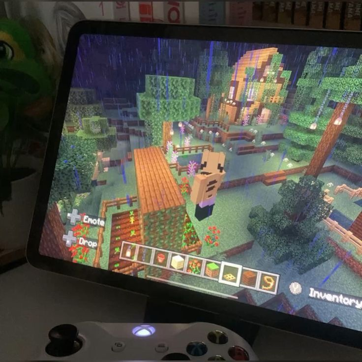

Mis Pasa Tiempo

La verdad es que mis pasatiempos son pocos, me gusta demasiado escuchar musica,y hugar videojuesgos y otro es ver series
Home
Mi nacimiento
Mi familia
Mi educación
Mi horario
Mis gustos musicales
Mi proyecto de vida?
Mis amigos